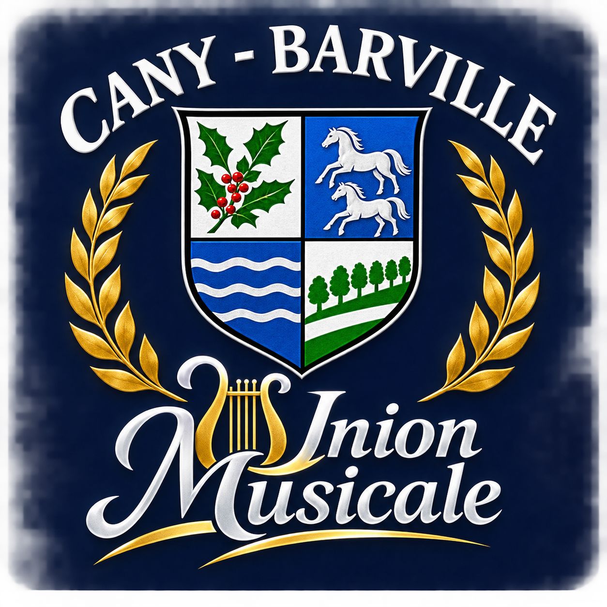
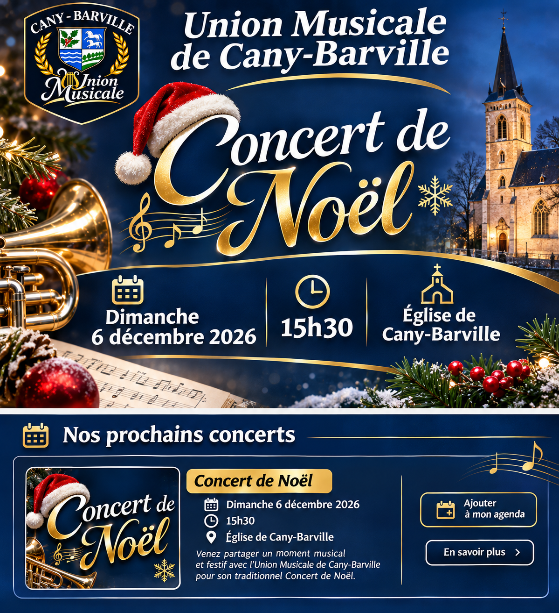

La musique nous rassemble
Partageons ensemble notre passion de la musique.
Découvrir l'association1866 - 2026 : 160 ans de musique
Depuis 1866, l'Union Musicale de Cany-Barville fait vivre la musique au coeur de la commune. D'abord fanfare, elle a évolué au fil des générations pour devenir un orchestre d'harmonie.
1866 - La fondation
Naissance de l'Union Musicale de Cany-Barville, autour de musiciens passionnés.
1945 - Un nouveau départ
Après la Seconde Guerre mondiale, les musiciens se retrouvent pour faire revivre la fanfare.
1966 - Le centenaire
L'Union Musicale fête ses 100 ans et accueille des musiciens de Maximiliansau, en Allemagne.
1967 - L'amitié franco-allemande
Le jumelage entre Cany-Barville et Maximiliansau est officiellement signé.
2016 - Les 150 ans
L'association célèbre un siècle et demi de musique et de traditions.
2026 - Les 160 ans
L'Union Musicale poursuit son histoire grâce à l'engagement de ses musiciens et à sa passion pour la musique.
Cérémonies commémoratives, fête nationale, fête de la musique, Sainte-Cécile et concerts : l'Union Musicale accompagne depuis des générations les grands moments de Cany-Barville.
Depuis 1866, les générations passent, mais la musique continue de nous rassembler.

L'Union Musicale de Cany-Barville vous invite à son concert de Noël !
📅 Dimanche 6 décembre 2026
🕒 15h30
📍 Église de Cany-Barville
Venez partager un agréable moment musical dans une ambiance festive.
Revivez en images le 160e anniversaire !
L'Union Musicale de Cany-Barville accueille de nouveaux musiciens !
Que vous soyez débutant ou confirmé, venez partager votre passion dans une ambiance conviviale.
Contactez-nous pour obtenir davantage de renseignements !
Pour toute demande de renseignements, inscription ou prestation musicale, n'hésitez pas à nous contacter.
M. Michel Bailleul
Mme Carole Olivier
unionmusicalecanybarville@gmail.com
Cany-Barville (76450), Seine-Maritime